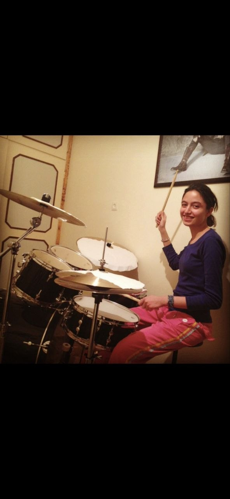
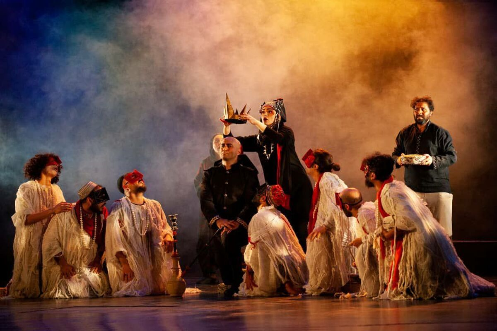
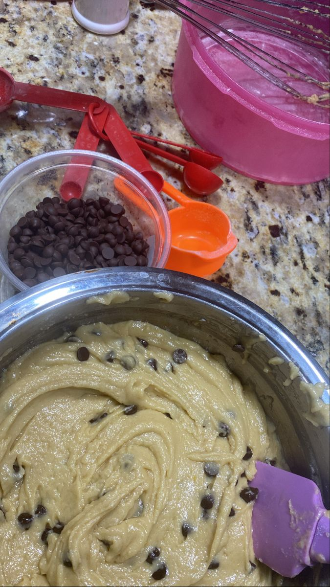

Hello, this is me ♡
About Me
Curious, creative, hardworking and always willing to learn.
I am from Iran and I am currently studying ICT at HZ University of Applied Sciences.
I enjoy learning new things, exploring new places and meeting new people. I also like technology and I am curious about how things work.
Outside of ICT, I enjoy playing the drums, baking cakes and going to the theatre.
I am a very hardworking person. When something is difficult, I try not to give up easily.
At first I can seem quiet or serious, but when I become comfortable with people I am actually playful and enjoy having fun.
During my studies I also want to become more confident, meet new people and improve my social and communication skills.
My GitHub
One of the things I enjoy ♡

ONE OF MY FAVORITE THINGS ♡
Theatre
Theatre is one of the things I really enjoy. I like the atmosphere of live performances and the way actors can tell a story directly in front of an audience.
What I like most about theatre is that every performance feels different. It combines acting, music, costumes, lighting and creativity to create something special on stage.
I also enjoy seeing how many different people and skills come together behind the scenes to create one performance.
What I Enjoy About Theatre
- Live acting and storytelling
- Music, costumes and stage design
- The atmosphere of a live performance
ANOTHER THING I LOVE ♡
Baking
Baking is another activity that I really enjoy. I like the whole process, from preparing the ingredients to seeing the final result.
For me, baking is both creative and relaxing. I enjoy trying different recipes, especially cakes and desserts, and changing small details to make something my own.
I also like that baking requires patience and attention. Small details can change the final result, which makes the process interesting to me.

Something sweet in progress ♡